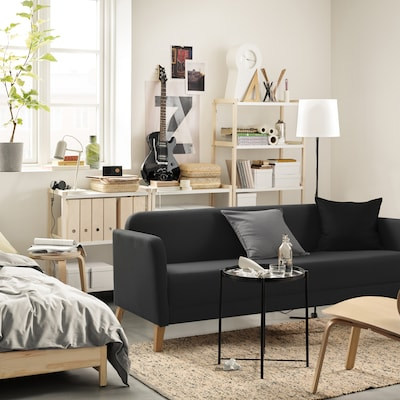

IKEA

The first IKEA sold small household goods like pens, wallets, and frames for pictures. It would be five years before the store got into the furniture business. As for how Kamprad came up with the name IKEA – it’s his initials Ingvar Kamprad followed by E for Elmtaryd, the family farm he grew up on, and Agunnaryd, his home village. In 1945, Kamprad was using milk trucks to deliver his products.
IKEA first came to the United States in 1985; the flagship location was in Plymouth Meeting, Pennsylvania. Today, there are over 50 IKEA stores in the United States. The chain is well-known for its quirky product names, but according to several sources, they exist because Kamprad was reportedly dyslexic. Sources note that naming his inventory after people, animals, places, and other familiar words (and often naming all items in a given category after the same things — for example, IKEA bathroom products are all named after Swedish lakes and bodies of water) reportedly helped him keep track of it all. IKEA is also famous for its iconic blue-and-yellow logo, which was introduced in 1983 and updated slightly in 2018 to improve legibility and its appearance on digital screens. Today, IKEA is one of the world’s best-known furniture retailers with stores located all over the world.